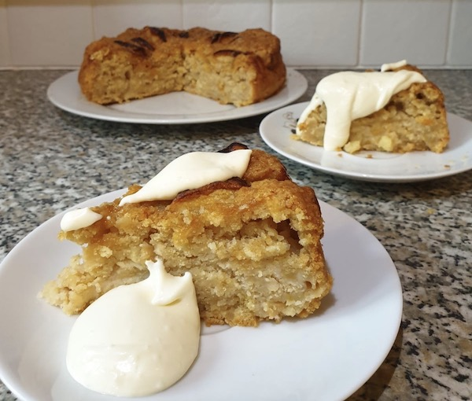

Dorset Apple Cake
Ingredients:
-
2 Cup of Self-Rising Flour
-
1/4 tsp of Baking Powder
-
1/4 tsp of Cinnamon
-
120g of Salted Vegan Butter at Room Temperature
-
2-3 Large Apples (Preferaby Brambley)
-
1/3 Cup of Vegan Buttermilk or Yogurt
-
2 tbsp of Demerera Sugar
-
1/2 Cup of Light Brown Sugar

Method:
-
Preheat the oven.
-
Grease and line an 8″ baking tin.
-
Chop up the apples into small cubes. Then set aside.
-
In a large bowl, mix together the flour, baking powder and cinnamon.
-
Add the butter, and using your fingertips, lightly mix in the butter and the flour. Mix until you get a coarse, wet sand-sort of mixture. Like making a crumble. If you prefer, you could do this part in a food processor, then transfer everything into the bowl to move on to the next step.
-
Stir in the sugar with a wooden spoon.
-
Toss in the apples and lightly mix with the spoon.
-
Slowly add the buttermilk or yogurt and mix thoroughly.
-
Slice another apple. Make sure the slices aren't too big.
-
Pour into your prepared cake tin and lay out the sliced apples on top. Then sprinkle the demerera sugar all over.
-
Bake for 50-60 minutes, until a tooth pick inserted into the middle comes out clean.
-
You can keep the cake for 3-4 days, stored in an airtight container.